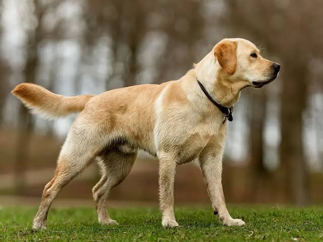

Лабрадор
порода мисливських собак, належить до 8 групи МКФ
порода мисливських собак, належить до 8 групи МКФ
порода декоративних собак, яка згідно з класифікацією Міжнародної Кінологічної Федерації належить до 9 групи — «Собаки-компаньйони та тої»
пзагальна назва порід собак, яких використовують у вівчарстві для охорони отари овець, також складів тощо
До́берман, або тюринзький пінчер (нім. Dobermann) — порода короткошерстих службових собак, виведена в Німеччині, у Тюрингії, у місті Апольда наприкінці XIX
порода мисливських собак, належить до 8 групи МКФ